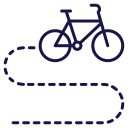
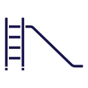
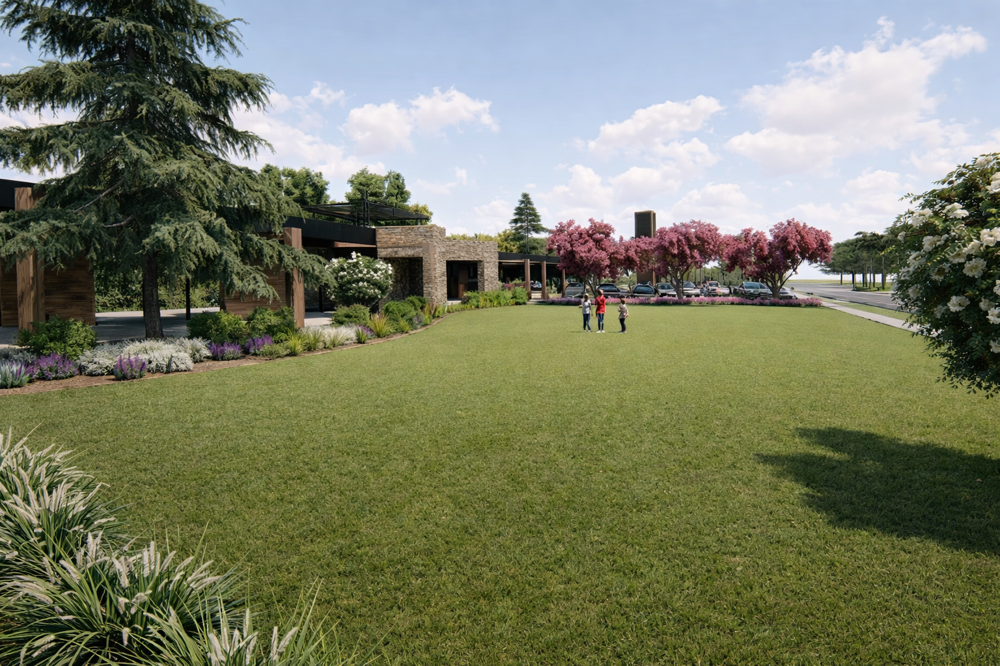
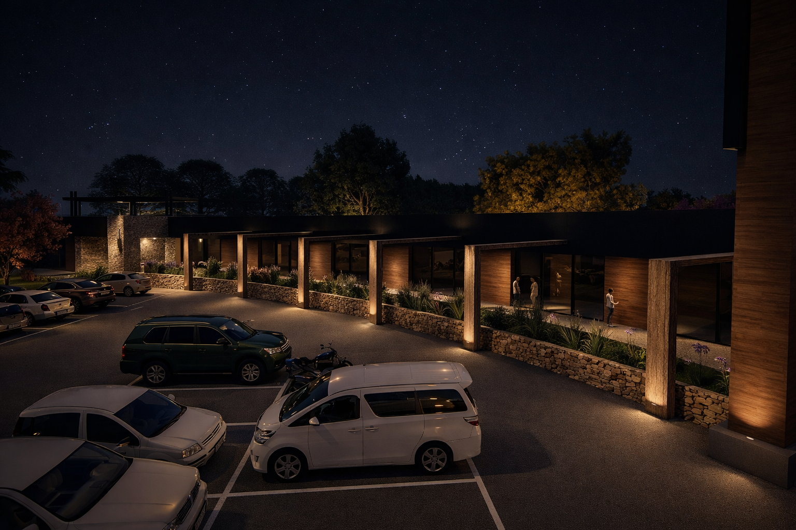
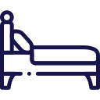
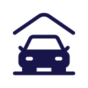

9 min
del centro de Junín
9 min
del centro de Junín
 24/7
Seguridad
24/7
Seguridad
 100%
Espacios verdes
100%
Espacios verdes
 +
Valorización
+
Valorización
 Seguridad
Seguridad
 Zona Verde
Zona Verde
Strip Center

Bicisenda
Juegos infantilesGalería



2 habitaciones
2 baños

CocheraEntrega llave en mano
3 habitaciones
3 baños
2 cocheras
Entrega llave en mano
 Plano de distribución de lotes
Plano de distribución de lotes
¡Conocé nuestras opciones de financiación!
Adhesión + 60 cuotas en USD
Adhesión + 12 cuotas en ARS
¡Contáctanos!